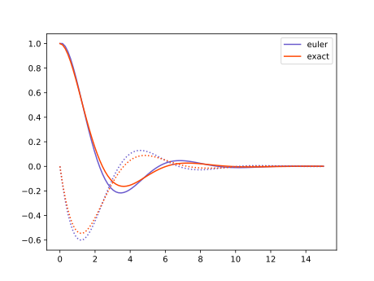
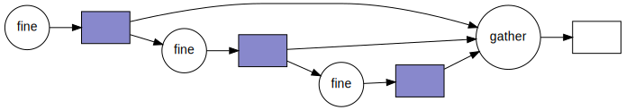
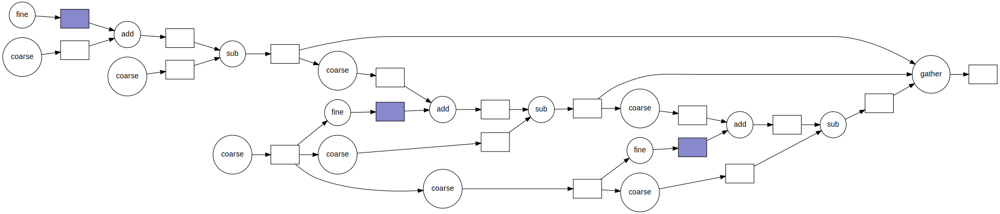

This package runs the parareal algorithm on a black-box simulator. Parallelisation is managed through Dask.
License
Apache 2, see LICENSE.
Parareal
file:parareal/__init__.py
from .tabulate_solution import tabulate
from .parareal import parareal
from . import abstract
__all__ = ["tabulate", "parareal", "schedule", "abstract"]Components
We may present the Parareal algorithm in abstract terms, and match those terms with corresponding type definitions in Python.
We need to define the following:
VectorA
Vectoris an object that represents the state of a solution at any one time. On this state we need to be able to do addition, subtraction and scalar multiplication, in order to perform the Parareal algorithm.SolutionA
Solutionis a function that takes an initialVector, a timet_0and a timet, returning the stateVectorat timet.MappingA
Mappingis a function from one stateVectorto another, for example a mapping from a coarse to a fine mesh or vice-versa.- Fine
SolutionThe fine solution is the solution at the desired resolution. If we were not doing parallel-in-time, this would be the integrator to get at the correct result. We may also use the fine solution to find a ground thruth in testing the Parareal solution.
- Coarse
SolutionThe coarse solution is the solution that is fast but less accurate.
file:parareal/abstract.py
from __future__ import annotations
from typing import (Callable, Protocol, TypeVar, Union)
<<abstract-types>>Vector
We have an ODE in the form
\[y' = f(y, t).\](1)
Here \(y\) can be a scalar value, a vector of values (say a numpy array), or any expression of state. A naive implementation of an ODE integrator would be
\[y_{n+1} = y_{n} + \Delta t f(y_{n}, t).\](2)
eq. 2 is known as the forward Euler method. We can capture the state \(y\) in an abstract class we’ll call Vector. We chose this name because we expect this objects to share (some of) the arithmetic properties of mathematical vectors. Namely, we want to be able to add, subtract and scale them. The chunk below states this need of a basic arithmetic in the form of abstract methods.
«abstract-types»
TVector = TypeVar("TVector", bound="Vector")
class Vector(Protocol):
def __add__(self: TVector, other: TVector) -> TVector:
...
def __sub__(self: TVector, other: TVector) -> TVector:
...
def __mul__(self: TVector, other: float) -> TVector:
...
def __rmul__(self: TVector, other: float) -> TVector:
...We don’t actually need to implement these methods right now. All this is saying, is that any type that has these methods defined can stand in for a Vector.
Note that we don’t make a formal distinction here between a state vector and a vector representing a change in state.
«abstract-types»
Mapping = Callable[[TVector], TVector]Problem
An ODE is then given as a function taking a Vector (the state \(y\)) and a float (the time \(t\)) returning a Vector (the derivative \(y' = f(y,t)\) evaluated at \((y,t)\)). We define the type Problem:
«abstract-types»
Problem = Callable[[TVector, float], TVector]In mathematical notation the snippet above means:
\[{\rm Problem} : (y, t) \to f(y, t) = y'\]
Solution
If we have a Problem, we’re after a Solution: a function that, given an initial Vector (the initial condition \(y_0\)), initial time (\(t_0\)) and final time (\(t\)), gives the resulting Vector (the solution, \(y(t)\) for the given initial conditions).
«abstract-types»
Solution = Union[Callable[[TVector, float, float], TVector],
Callable[..., TVector]]Those readers more familiar with classical physics or mathematics may notice that our Problem object corresponds with the function \(f\) in (eq. 1). The Solution object, on the other hand, corresponds with the evolution operator \(\phi\) in equation 3.
\[{\rm Solution} : (y_0, t_0; t) \to \phi(y_0, t_0; t) = y.\](3)
Intuitively, \(\phi\) represents any method that solves (even approximately) our initial value problem.
Example
An example of a Problem would be the function,
\[f(y, t) = r y,\]
in which case the corresponding Solution is,
\[\phi(y_0, t_0; t) = y_0 e^{r(t - t_0)}.\]
Solver
The challenge is, of course, to find a way of transforming a Problem into a Solution. This is what integration algorithms, or solvers do:
\[{\rm Solver} : {\rm Problem} \to {\rm Solution}.\]
If we look a bit closely at the definitions of Problem and Solution we’ll notice that a solver is indeed a functional that accepts functions of \((y,t)\) as an input and returns functions of \((y_0, t_0, t)\) as an output.
An example of such a solver is the forward Euler method (eq. 2), that can be implemented as:
file:parareal/forward_euler.py
from .abstract import (Vector, Problem, Solution)
def forward_euler(f: Problem) -> Solution:
"""Forward-Euler solver."""
def step(y: Vector, t_0: float, t_1: float) -> Vector:
"""Stepping function of Euler method."""
return y + (t_1 - t_0) * f(y, t_0)
return stepAny existing solution can be iterated over to provide a solution over a larger time interval. The iterate_solution function runs a given solution with a step-size fixed to \(\Delta t = h\).
file:parareal/iterate_solution.py
from .abstract import (Vector, Solution)
import numpy as np
import math
def iterate_solution(step: Solution, h: float) -> Solution:
def iter_step(y: Vector, t_0: float, t_1: float) -> Vector:
"""Stepping function of iterated solution."""
n = math.ceil((t_1 - t_0) / h)
steps = np.linspace(t_0, t_1, n + 1)
for t_a, t_b in zip(steps[:-1], steps[1:]):
y = step(y, t_a, t_b)
return y
return iter_stepExample: damped harmonic oscillator
We give a bit more attention to the example of the harmonic oscillator, because it will also serve as a first test case for the Parareal algorithm later on.
The harmonic oscillator can model the movement of a pendulum or the vibration of a mass on a string.
\[y'' + 2\zeta \omega_0 y' + \omega_0^2 y = 0,\]
where \(\omega_0 = \sqrt{k/m}\) and \(\zeta = c / 2\sqrt{mk}\), \(k\) being the spring constant, \(m\) the test mass and \(c\) the friction constant.
To solve this second order ODE we need to introduce a second variable to solve for. Say \(q = y\) and \(p = y'\).
\[\begin{aligned} q' &= p\\ p' &= -2\zeta \omega_0 p + \omega_0^2 q \end{aligned}\](4)
The Problem is then given as
file:parareal/harmonic_oscillator.py
from .abstract import (Problem)
from typing import Callable
from numpy.typing import NDArray
import numpy as np
def harmonic_oscillator(omega_0: float, zeta: float) -> Problem:
def f(y, t):
return np.r_[y[1], -2 * zeta * omega_0 * y[1] - omega_0**2 * y[0]]
return f
<<harmonic-oscillator-solution>>
if __name__ == "__main__":
import numpy as np # type: ignore
import pandas as pd # type: ignore
from plotnine import ggplot, geom_line, aes # type: ignore
from pintFoam.parareal.harmonic_oscillator import harmonic_oscillator
from pintFoam.parareal.forward_euler import forward_euler
from pintFoam.parareal.iterate_solution import iterate_solution
from pintFoam.parareal.tabulate_solution import tabulate_np
OMEGA0 = 1.0
ZETA = 0.5
H = 0.001
system = harmonic_oscillator(OMEGA0, ZETA)
def coarse(y, t0, t1):
return forward_euler(system)(y, t0, t1)
# fine :: Solution[NDArray]
def fine(y, t0, t1):
return iterate_solution(forward_euler(system), H)(y, t0, t1)
y0 = np.array([1.0, 0.0])
t = np.linspace(0.0, 15.0, 100)
exact_result = underdamped_solution(OMEGA0, ZETA)(t)
euler_result = tabulate_np(fine, y0, t)
data = pd.DataFrame({
"time": t,
"exact_q": exact_result[:,0],
"exact_p": exact_result[:,1],
"euler_q": euler_result[:,0],
"euler_p": euler_result[:,1]})
plot = ggplot(data) \
+ geom_line(aes("time", "exact_q")) \
+ geom_line(aes("time", "euler_q"), color="#000088")
plot.save("plot.svg")Exact solution
The damped harmonic oscillator has an exact solution, given the ansatz \(y = A \exp(z t)\), we get
\[z_{\pm} = \omega_0\left(-\zeta \pm \sqrt{\zeta^2 - 1}\right).\]
and thus the general solution:
\[y(t) = A \exp(z_+ t) + B \exp(z_- t) \ : \zeta \neq 1 \] \[y(t) = (A + Bt) \exp(-\omega_0 t) : \zeta = 1 \]
This dynamical system has three qualitatively different solutions, each of them depending on the sign of the contents of the square root. Particularly, if the contents of the square root are negative, the two possible values for \(z\) will be complex numbers, making oscillations possible. More specifically, the three cases are:
- overdamped (\(\zeta > 1\) and, thus, both \(z\) are real numbers)
- critical dampening (\(\zeta = 1\) and \(z\) is real and equal to \(-\omega_0\))
- underdamped (\(\mid \zeta \mid < 1\), and \(z = -\omega_0\zeta \mp i \omega_0 \sqrt{1 - \zeta^2}\)).
The underdamped case is typically the most interesting one. In this case we have solutions of the form:
\[y = A\quad \underbrace{\exp(-\omega_0\zeta t)}_{\rm dampening}\quad\underbrace{\exp(\pm i \omega_0 \sqrt{1 - \zeta^2} t)}_{\rm oscillation},\]
Given an initial condition \(q_0 = 1, p_0 = 0\), the solution is computed as
«harmonic-oscillator-solution»
def underdamped_solution(omega_0: float, zeta: float) \
-> Callable[[NDArray[np.float64]], NDArray[np.float64]]:
amp = 1 / np.sqrt(1 - zeta**2)
phase = np.arcsin(zeta)
freq = omega_0 * np.sqrt(1 - zeta**2)
def f(t: NDArray[np.float64]) -> NDArray[np.float64]:
dampening = np.exp(-omega_0*zeta*t)
q = amp * dampening * np.cos(freq * t - phase)
p = - amp * omega_0 * dampening * np.sin(freq * t)
return np.c_[q, p]
return fNumeric solution
To plot a Solution, we need to tabulate the results for a given sequence of time points.
file:parareal/tabulate_solution.py
from .abstract import (Solution, Vector)
from typing import (Sequence, Any)
import numpy as np
Array = Any
def tabulate(step: Solution, y_0: Vector, t: Array) -> Sequence[Vector]:
"""Tabulate the step-wise solution, starting from `y_0`, for every time
point given in array `t`."""
if isinstance(y_0, np.ndarray):
return tabulate_np(step, y_0, t)
y = [y_0]
for i in range(1, t.size):
y_i = step(y[i-1], t[i-1], t[i])
y.append(y_i)
return y
<<tabulate-np>>In the case that the Vector type is actually a numpy array, we can specialize the tabulate routine to return a larger array.
«tabulate-np»
def tabulate_np(step: Solution, y_0: Array, t: Array) -> Array:
y = np.zeros(dtype=y_0.dtype, shape=(t.size,) + y_0.shape)
y[0] = y_0
for i in range(1, t.size):
y[i] = step(y[i-1], t[i-1], t[i])
return yWe can compare the results from the numeric integration with the exact solution.

Parareal
From Wikipedia:
Parareal solves an initial value problem of the form
\[\dot{y}(t) = f(y(t), t), \quad y(t_0) = y_0 \quad \text{with} \quad t_0 \leq t \leq T.\]
Here, the right hand side \(f\) can correspond to the spatial discretization of a partial differential equation in a method of lines approach. Parareal now requires a decomposition of the time interval \([t_0, T]\) into \(P\) so-called time slices \([t_j, t_{j+1}]\) such that
\[[t_0, T] = [t_0, t_1] \cup [t_1, t_2] \cup \ldots \cup [t_{P-1}, t_{P} ].\]
Each time slice is assigned to one processing unit when parallelizing the algorithm, so that \(P\) is equal to the number of processing units used for Parareal.
Parareal is based on the iterative application of two methods for integration of ordinary differential equations. One, commonly labelled \({\mathcal {F}}\), should be of high accuracy and computational cost while the other, typically labelled \({\mathcal {G}}\), must be computationally cheap but can be much less accurate. Typically, some form of Runge-Kutta method is chosen for both coarse and fine integrator, where \({\mathcal {G}}\) might be of lower order and use a larger time step than \({\mathcal {F}}\). If the initial value problem stems from the discretization of a PDE, \({\mathcal {G}}\) can also use a coarser spatial discretization, but this can negatively impact convergence unless high order interpolation is used. The result of numerical integration with one of these methods over a time slice \([t_{j}, t_{j+1}]\) for some starting value \(y_{j}\) given at \(t_{j}\) is then written as
\[y = \mathcal{F}(y_j, t_j, t_{j+1})\ {\rm or}\ y = \mathcal{G}(y_j, t_j, t_{j+1}).\]
Serial time integration with the fine method would then correspond to a step-by-step computation of
\[y_{j+1} = \mathcal{F}(y_j, t_j, t_{j+1}), \quad j=0, \ldots, P-1.\]
Parareal instead uses the following iteration
\[y_{j+1}^{k+1} = \mathcal{G}(y^{k+1}_j, t_j, t_{j+1}) + \mathcal{F}(y^k_j, t_j, t_{j+1}) - \mathcal{G}(y^k_j, t_j, t_{j+1}),\\ \quad j=0, \ldots, P-1, \quad k=0, \ldots, K-1,\]
where \(k\) is the iteration counter. As the iteration converges and \(y^{k+1}_j - y^k_j \to 0\), the terms from the coarse method cancel out and Parareal reproduces the solution that is obtained by the serial execution of the fine method only. It can be shown that Parareal converges after a maximum of \(P\) iterations. For Parareal to provide speedup, however, it has to converge in a number of iterations significantly smaller than the number of time slices, that is \(K \ll P\).
In the Parareal iteration, the computationally expensive evaluation of \(\mathcal{F}(y^k_j, t_j, t_{j+1})\) can be performed in parallel on \(P\) processing units. By contrast, the dependency of \(y^{k+1}_{j+1}\) on \(\mathcal{G}(y^{k+1}_j, t_j, t_{j+1})\) means that the coarse correction has to be computed in serial order.
Don’t get blinded by the details of the algorithm. After all, everything boils down to an update equation that uses a state vector \(y\) to calculate the state at the immediately next future step (in the same fashion as equation eq. 2 did). The core equation translates to:
«parareal-core-1»
y_n[i] = coarse(y_n[i-1], t[i-1], t[i]) \
+ fine(y[i-1], t[i-1], t[i]) \
- coarse(y[i-1], t[i-1], t[i])If we include a Mapping between fine and coarse meshes into the equation, we get:
«parareal-core-2»
y_n[i] = c2f(coarse(f2c(y_n[i-1]), t[i-1], t[i])) \
+ fine(y[i-1], t[i-1], t[i]) \
- c2f(coarse(f2c(y[i-1]), t[i-1], t[i]))The rest is boiler plate. For the c2f and f2c mappings we provide a default argument of the identity function.
file:parareal/parareal.py
from .abstract import (Solution, Mapping)
import numpy as np
def identity(x):
return x
def parareal(
coarse: Solution,
fine: Solution,
c2f: Mapping = identity,
f2c: Mapping = identity):
def f(y, t):
m = t.size
y_n = [None] * m
y_n[0] = y[0]
for i in range(1, m):
<<parareal-core-2>>
return y_n
return f
def parareal_np(
coarse: Solution,
fine: Solution,
c2f: Mapping = identity,
f2c: Mapping = identity):
def f(y, t):
m = t.size
y_n = np.zeros_like(y)
y_n[0] = y[0]
for i in range(1, m):
<<parareal-core-2>>
return y_n
return fRunning in parallel
«import-dask»
from dask import delayed # type: ignoreTo see what Dask does, first we’ll daskify the direct integration routine in tabulate. We take the same harmonic oscillator we had before. For the sake of argument let’s divide the time line in three steps (so four points).
«daskify»
omega_0 = 1.0
zeta = 0.5
f = harmonic_oscillator(omega_0, zeta)
t = np.linspace(0.0, 15.0, 4)We now define the fine integrator:
«daskify»
h = 0.01
@green
@delayed
def fine(x, t_0, t_1):
return iterate_solution(forward_euler(f), h)(x, t_0, t_1)It doesn’t really matter what the fine integrator does, since we won’t run anything. We’ll just pretend. The delayed decorator makes sure that the integrator is never called, we just store the information that we want to call the fine function. The resulting value is a promise that at some point we will call the fine function. The nice thing is, that this promise behaves like any other Python object, it even qualifies as a Vector! The tabulate routine returns a Sequence of Vectors, in this case a list of promises. The gather function takes a list of promises and turns it into a promise of a list.
«daskify»
y_euler = tabulate(fine, [1.0, 0.0], t)We can draw the resulting workflow:

This workflow is entirely sequential, every step depending on the preceding one. Now for Parareal! We also define the coarse integrator.
«daskify»
@delayed
def coarse(x, t_0, t_1):
return forward_euler(f)(x, t_0, t_1)Parareal is initialised with the ODE integrated by the coarse integrator, just like we did before with the fine one.
«daskify»
y_first = tabulate(coarse, [1.0, 0.0], t)We can now perform a single iteration of Parareal to see what the workflow looks like:
«daskify»
y_parareal = gather(*parareal(coarse, fine)(y_first, t))
Implementation of Parareal using Futures
We reimplement Parareal in the futures framework of Dask. We have a few helper functions: identity to be used as default instance for the mappings between coarse and fine meshes, and pairs, a function that iterates through successive pairs of a list.
file:parareal/futures.py
from .abstract import (Solution, Mapping, Vector)
from typing import (Callable)
from dataclasses import dataclass
from math import ceil
import numpy as np
from numpy.typing import NDArray
from dask.distributed import Client, Future # type: ignore
import logging
def identity(x):
return x
def pairs(lst):
return zip(lst[:-1], lst[1:])We need to send every operation to a remote worker, that includes summing the vectors from coarse and fine integrators.
«parareal-futures»
def combine(c1: Vector, f1: Vector, c2: Vector) -> Vector:
return c1 + f1 - c2«time-windows»
def time_windows(times, window_size):
"""Split the times vector in a set of time windows of a given size.
Args:
times: The times vector
window_size: The number of steps per window (note that n steps
correspond to n + 1 elements in the window). The last window may
be smaller.
"""
n_intervals = len(times) - 1
n = int(ceil(n_intervals / window_size))
m = window_size
return [times[i*m:min(i*m+m+1, len(times))] for i in range(n)]Every call that actually requires some of the data needs to be sent to the remote worker(s). Where we could get away before with putting everything in a closure, now it is easier to make a class that includes the Dask Client instance.
«parareal-futures»
@dataclass
class Parareal:
client: Client
coarse: Callable[[int], Solution]
fine: Callable[[int], Solution]
c2f: Mapping = identity
f2c: Mapping = identity
def _c2f(self, x: Future) -> Future:
if self.c2f is identity:
return x
return self.client.submit(self.c2f, x)
def _f2c(self, x: Future) -> Future:
if self.f2c is identity:
return x
return self.client.submit(self.f2c, x)
def _coarse(self, n_iter: int, y: Future, t0: float, t1: float) -> Future:
logging.debug("Coarse run: %s, %s, %s", y, t0, t1)
return self.client.submit(self.coarse(n_iter), y, t0, t1)
def _fine(self, n_iter: int, y: Future, t0: float, t1: float) -> Future:
logging.debug("Fine run: %s, %s, %s", y, t0, t1)
return self.client.submit(self.fine(n_iter), y, t0, t1)
<<parareal-methods>>The step method implements the core parareal algorithm.
«parareal-methods»
def step(self, n_iter: int, y_prev: list[Future], t: NDArray[np.float64]) -> list[Future]:
m = t.size
y_next = [None] * m
y_next[0] = y_prev[0]
for i in range(1, m):
c1 = self._c2f(self._coarse(n_iter, self.f2c(y_next[i-1]), t[i-1], t[i]))
f1 = self._fine(n_iter, y_prev[i-1], t[i-1], t[i])
c2 = self._c2f(self._coarse(n_iter, self.f2c(y_prev[i-1]), t[i-1], t[i]))
y_next[i] = self.client.submit(combine, c1, f1, c2)
return y_nextWe schedule every possible iteration of parareal as a future. The tactic is to cancel remaining jobs only once we found a converging result. This way, workers can compute next iterations, even if the last step of the previous iteration is not yet complete and tested for convergence.
«parareal-methods»
def schedule(self, y_0: Vector, t: NDArray[np.float64]) -> list[list[Future]]:
# schedule initial coarse integration
y_init = [self.client.scatter(y_0)]
for (a, b) in pairs(t):
y_init.append(self._coarse(0, y_init[-1], a, b))
# schedule all iterations of parareal
jobs = [y_init]
for n_iter in range(len(t)):
jobs.append(self.step(n_iter+1, jobs[-1], t))
return jobsThe wait method then gathers results and returns the first iteration that satisfies convergence_test.
«parareal-methods»
def wait(self, jobs, convergence_test):
for i in range(len(jobs)):
result = self.client.gather(jobs[i])
if convergence_test(result):
for j in jobs[i+1:]:
self.client.cancel(j)
return result
return resultHarmonic oscillator
We may test this on the harmonic oscillator.
file:test/test_futures.py
from dataclasses import dataclass, field
from functools import partial
import logging
from numpy.typing import NDArray
import numpy as np
from parareal.futures import Parareal
from parareal.harmonic_oscillator import harmonic_oscillator
from parareal.forward_euler import forward_euler
from parareal.iterate_solution import iterate_solution
from parareal.tabulate_solution import tabulate
from dask.distributed import Client # type: ignore
OMEGA0 = 1.0
ZETA = 0.5
H = 0.001
system = harmonic_oscillator(OMEGA0, ZETA)
def coarse(_, y, t0, t1):
return forward_euler(system)(y, t0, t1)
def fine(_, y, t0, t1):
return iterate_solution(forward_euler(system), H)(y, t0, t1)
@dataclass
class History:
history: list[NDArray[np.float64]] = field(default_factory=list)
def convergence_test(self, y):
self.history.append(np.array(y))
logging.debug("got result: %s", self.history[-1])
if len(self.history) < 2:
return False
return np.allclose(self.history[-1], self.history[-2], atol=1e-4)
def test_parareal():
client = Client()
p = Parareal(client, lambda n: partial(coarse, n), lambda n: partial(fine, n))
t = np.linspace(0.0, 15.0, 30)
y0 = np.array([0.0, 1.0])
history = History()
jobs = p.schedule(y0, t)
p.wait(jobs, history.convergence_test)
if __name__ == "__main__":
logging.basicConfig(level=logging.DEBUG)
y0 = np.array([1.0, 0.0])
t = np.linspace(0.0, 15.0, 30)
result = tabulate(fine, y0, t)
print(result)Example: using HDF5 and MPI and Dask futures
In this example, we look again at the example of a dampened harmonic oscillator. This time we will go in engineering overkill mode and show how a model can be scaled to a large compute cluster using Dask, MPI and HDF5 as intermediate storage. To avoid confusion and difficult software configuration, we won’t use the MPI feature of the HDF5 format. Instead, every job will write its output to its own HDF5 file.
This tutorial covers the following concepts: * delayed arithmetic expressions * defining the coarse and fine integrators * using MPI with Dask
Best practices
The following shows some best practices when working with orchestrated computations. One is about using well established data standards, the other about reducing overhead on the distributed scheduler. We can solve both these issues by abstracting over the representation of the state vector in our system. This technique is definitely overkill for our harmonic oscillator example, but it is also in general a good recipe for running Numpy based simulations in an organized manner.
file:examples/mpi_futures.py
from __future__ import annotations
import argh # type: ignore
import numpy as np
from pathlib import Path
from dataclasses import dataclass, field
from typing import (Union, Callable, Optional, Any, Iterator)
<<example-mpi-imports>>
<<vector-expressions>>
<<example-mpi-coarse>>
<<example-mpi-fine>>
<<example-mpi-history>>
def get_data(files: list[Path]) -> Iterator[np.ndarray]:
for n in files:
with h5.File(n, "r") as f:
yield f["data"][:]
def combine_fine_data(files: list[Path]) -> np.ndarray:
data = get_data(files)
first = next(data)
return np.concatenate([first] + [x[1:] for x in data], axis=0)
# def list_files(path: Path) -> list[Path]:
# all_files = path.glob("*.h5")
# return []
def main(log: str = "WARNING", log_file: Optional[str] = None,
OMEGA0=1.0, ZETA=0.5, H=0.01):
"""Run model of dampened hormonic oscillator in Dask"""
log_level = getattr(logging, log.upper(), None)
if not isinstance(log_level, int):
raise ValueError(f"Invalid log level `{log}`")
logging.basicConfig(level=log_level, filename=log_file)
<<example-mpi-main>>
if __name__ == "__main__":
argh.dispatch_command(main)Dask with MPI
There are two modes in which we may run Dask with MPI. One with a dask-mpi running as external scheduler, the other running everything as a single script. For this example we opt for the second, straight from the dask-mpi documentation:
«example-mpi-imports»
from dask_mpi import initialize # type: ignore
from dask.distributed import Client # type: ignore«example-mpi-main»
initialize()
client = Client()Vector Arithmetic Expressions
Abstract vectors
It may be convenient to treat our Vector operations such that they are only performed once their output is needed. That way, we only need to schedule the actual integration steps as external jobs. In the meantime we have to store the arithmetic in a serializable Expression value. By doing this we reduce the amount of jobs that have to be handled by the scheduler, but also we reduce the amount of data that is being written and read from the file system.
We will be using functools.partial and functions operator.add, operator.mul etc, to create a data structure that describes all the operations that we might do on a Vector. Results may be stored for reference in a hdf5 file, a feature that can also be hidden behind our Vector interface.
«example-mpi-imports»
import operator
from functools import partial
import h5py as h5 # type: ignore
from abc import (ABC, abstractmethod)We create a Vector class that satisfies the Vector concept outlined earlier. We store the operations in terms of unary and binary operators.
«vector-expressions»
class Vector(ABC):
@abstractmethod
def reduce(self: Vector) -> np.ndarray:
pass
def __add__(self, other):
return BinaryExpr(operator.add, self, other)
def __sub__(self, other):
return BinaryExpr(operator.sub, self, other)
def __mul__(self, scale):
return UnaryExpr(partial(operator.mul, scale), self)
def __rmul__(self, scale):
return UnaryExpr(partial(operator.mul, scale), self)The Vector class acts as a base class for the implementation of BinaryExpr and UnaryExpr, so that we can nest expressions accordingly. To force computation of a Vector, we supply the reduce_expr function that, in an example of terrible duck-typing, calls the reduce method recursively, until an object is reached that doesn’t have the reduce method.
«vector-expressions»
def reduce_expr(expr: Union[np.ndarray, Vector]) -> np.ndarray:
while isinstance(expr, Vector):
expr = expr.reduce()
return exprHDF5 Vectors
This means we can also hide variables that are stored in an HDF5 file behind this interface. We often want to store more information than just the state vector. In the case of parareal, we have results from fine integration and coarse integration. In the case of fine integration, what we need to represent is the final state of the integration, but we are also interested in the intermediate steps.
«vector-expressions»
@dataclass
class H5Snap(Vector):
path: Path
loc: str
slice: list[Union[None, int, slice]]
def data(self):
with h5.File(self.path, "r") as f:
return f[self.loc].__getitem__(tuple(self.slice))
def reduce(self):
x = self.data()
logger = logging.getLogger()
logger.debug(f"read {x} from {self.path}")
return self.data()To generate slices in a nice manner we can use a helper class:
«vector-expressions»
class Index:
def __getitem__(self, idx):
if isinstance(idx, tuple):
return list(idx)
else:
return [idx]
index = Index()Then index[a:b,c] returns a list of slices [slice(a,b), c] (type list[Union[None, int, slice]]).
Operators
There are two classes of operators, unary and binary (more arguments can usually be expressed as a composition of unary and binary forms). We store the arguments together with a function operating on the arguments. The function should be serializable (e.g. using pickle), meaning that lambda expressions are not allowed, but partial applications and functions in operator typically are ok.
«vector-expressions»
@dataclass
class UnaryExpr(Vector):
func: Callable[[np.ndarray], np.ndarray]
inp: Vector
def reduce(self):
a = reduce_expr(self.inp)
return self.func(a)
@dataclass
class BinaryExpr(Vector):
func: Callable[[np.ndarray, np.ndarray], np.ndarray]
inp1: Vector
inp2: Vector
def reduce(self):
a = reduce_expr(self.inp1)
b = reduce_expr(self.inp2)
return self.func(a, b)Literal expressions
To bootstrap our computation we may need to define a Vector directly represented by a Numpy array.
«vector-expressions»
@dataclass
class LiteralExpr(Vector):
value: np.ndarray
def reduce(self):
return self.valueRunning the harmonic oscillator
«example-mpi-imports»
from parareal.futures import (Parareal)
from parareal.forward_euler import forward_euler
# from pintFoam.parareal.iterate_solution import iterate_solution
from parareal.tabulate_solution import tabulate
from parareal.harmonic_oscillator import (underdamped_solution, harmonic_oscillator)
import math
# from uuid import uuid4
import logging«example-mpi-main»
system = harmonic_oscillator(OMEGA0, ZETA)«example-mpi-coarse»
@dataclass
class Coarse:
n_iter: int
system: Any
def solution(self, y, t0, t1):
a = LiteralExpr(forward_euler(self.system)(reduce_expr(y), t0, t1))
logging.debug(f"coarse result: {y} {reduce_expr(y)} {t0} {t1} {a}")
return a«example-mpi-fine»
def generate_filename(name: str, n_iter: int, t0: float, t1: float) -> str:
return f"{name}-{n_iter:04}-{int(t0*1000):06}-{int(t1*1000):06}.h5"
@dataclass
class Fine:
parent: Path
name: str
n_iter: int
system: Any
h: float
def solution(self, y, t0, t1):
logger = logging.getLogger()
n = math.ceil((t1 - t0) / self.h)
t = np.linspace(t0, t1, n + 1)
self.parent.mkdir(parents=True, exist_ok=True)
path = self.parent / generate_filename(self.name, self.n_iter, t0, t1)
with h5.File(path, "w") as f:
logger.debug("fine %f - %f", t0, t1)
y0 = reduce_expr(y)
logger.debug(": %s -> %s", y, y0)
x = tabulate(forward_euler(self.system), reduce_expr(y), t)
ds = f.create_dataset("data", data=x)
ds.attrs["t0"] = t0
ds.attrs["t1"] = t1
ds.attrs["h"] = self.h
ds.attrs["n"] = n
return H5Snap(path, "data", index[-1])«example-mpi-main»
y0 = np.array([1.0, 0.0])
t = np.linspace(0.0, 15.0, 20)
archive = Path("./output/euler")
underdamped_solution(OMEGA0, ZETA)(t)
tabulate(Fine(archive, "fine", 0, system, H).solution, LiteralExpr(y0), t)
# euler_files = archive.glob("*.h5")«example-mpi-history»
@dataclass
class History:
archive: Path
history: list[list[Vector]] = field(default_factory=list)
def convergence_test(self, y) -> bool:
logger = logging.getLogger()
self.history.append(y)
if len(self.history) < 2:
return False
a = np.array([reduce_expr(x) for x in self.history[-2]])
b = np.array([reduce_expr(x) for x in self.history[-1]])
maxdif = np.abs(a - b).max()
converged = maxdif < 1e-4
logger.info("maxdif of %f", maxdif)
if converged:
logger.info("Converged after %u iteration", len(self.history))
return converged«example-mpi-main»
archive = Path("./output/parareal")
p = Parareal(
client,
lambda n: Coarse(n, system).solution,
lambda n: Fine(archive, "fine", n, system, H).solution)
jobs = p.schedule(LiteralExpr(y0), t)
history = History(archive)
p.wait(jobs, history.convergence_test)